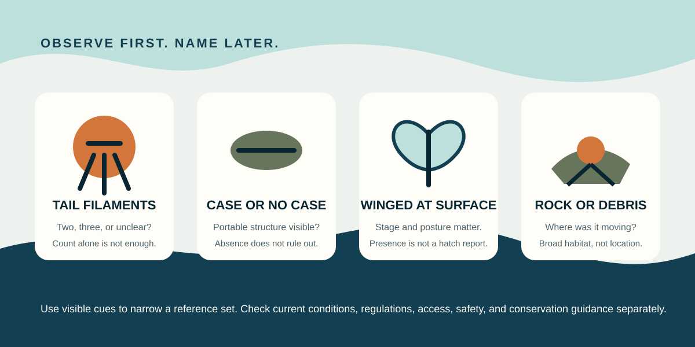

Biology before bravado
What did you actually see?
Compare visible cues against a small reviewed reference set. Broad context helps; exact coordinates do not belong here.
Reference plausibility is not a current observation. Check current conditions, regulations, access, safety, and conservation guidance separately.

Choose the broad context and the cues you could actually observe.